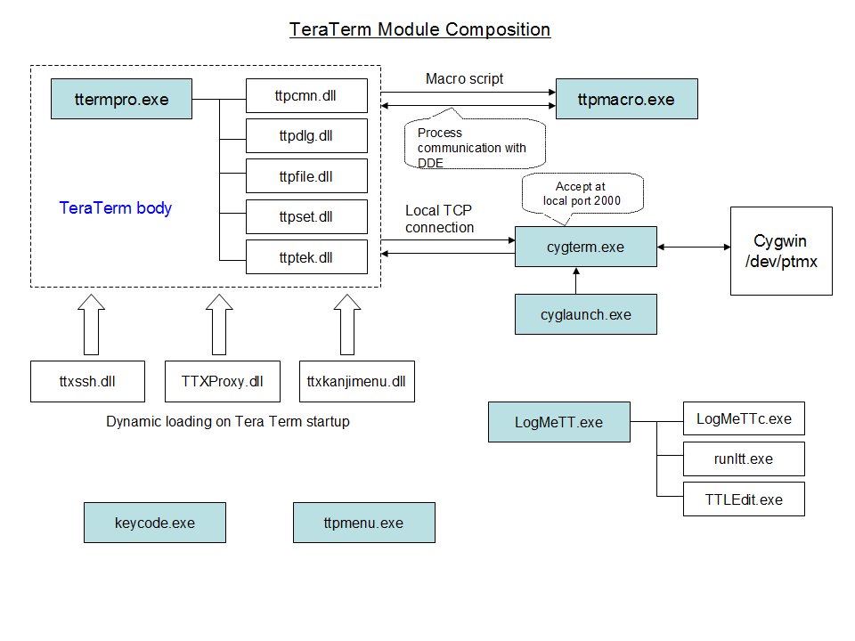
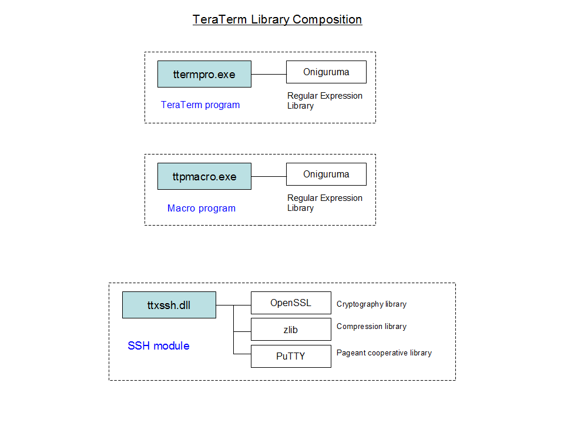
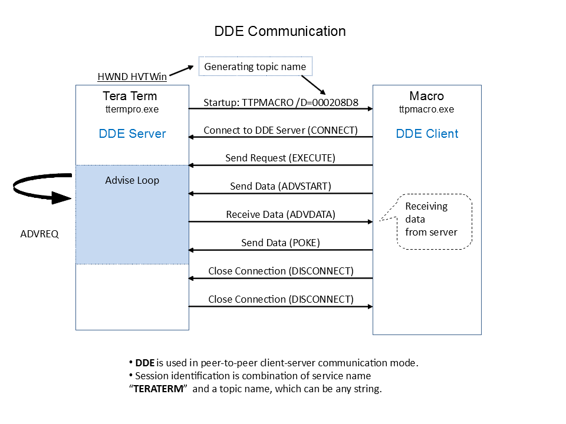
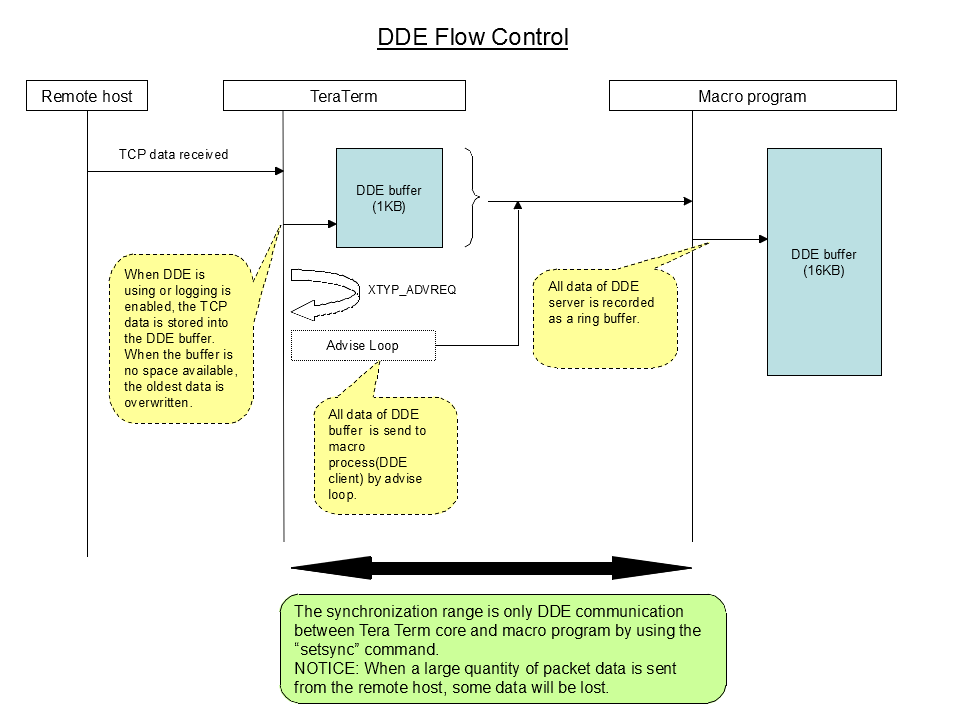

Tera Term Source Code Overview
- Foreword
- Skill Sets
- Module Composition
- Library Composition
- Supporting Plug-in
- Read and Write Configuration File
- Secure Programming
- Compatible with obsolete Windows
- Debugging Method
- Multithreading
- DDE Communication
- SSH Design and Implementation by TTSSH
- Macro Language Design and Implementation
- Caret Control
- Serial Port
- Binary Transfer Protocol
This article was written by TeraTerm Project in Februry 2008. The original is in Japanese language and is available from ttssh2.osdn.jp. Yutaka Hirata and Boris Maisuradze translated the article to English in December 2015.
Copyright © of below article belongs to TeraTerm Project. Republishing of this article or any part of this article whithout prior written permission of copyright owner is prohibited.
This article describes the source code of Tera Term version 4.58 released in February 2008. The general architecture of Tera Term did not change since then, so this description can be considered as up-to-date.
Most program included in the Tera Term package are described with the C language.
A part of code is described with the C++ language and used by MFC(Microsoft Foundation Class).
The Win32 API knowledge is required because the source code uses a lot of Win32 API to process the Windows specific function.
The Microsoft Visual Studio 2005 Standard Edition or later is required to build the source code. Unfortunately, the Express Edition can not build the source code because the Edition can not support the MFC feature. Also, Other compilers like the C++Builder, Turbo C++ Explorer and gcc can not be supported.
The Windows programming know-how is at the MSDN library provided by Microsoft Corporation.
A user will often refer the MSDN library while the user is developing the software.
However, the CygTerm is built with the gcc compiler of the Cygwin package. So, the CygTerm program is implemented by using the gcc feature. The source code is the C language.
The main engine of Tera Term is implemented by using the C++ language. It is no problem that your programming skill is only C language because the code is C-like programming. However, the Microsoft Visual C++(VC++) supports the ANSI C standard(C89) and not support the C99 version. The C99-like feature is uniquely supported by VC++. The C99-like function adds the underscore(_) to the initial name of function in order to distinguish easily. For example, the _snprintf() of VC++ is different from the snprintf() of ANSI C(C99).
Tera Term contains many executable module(.exe and .dll) and the association figure are below shown. An extension of an executable file is ".exe" and any DLL files are dynamically linked as needed. Every module is the 32-bit program(x86) and the developer team will not validate the Tera Term software on the 64-bit environment like the x86-64 and IA-64.

Basically, when a user launches the Tera Term from the Desktop and Start Menu, the "ttermpro.exe" file is executed at first. Additionally, the executable file calls five DLL files by the dynamic link. The "ttermpro.exe" file is not an all-in-one file by using the static link because the memory consumption of one process suppresses. Is is assumed that a number of Tera Term starts, and the Tera Term is divided to any DLL files from the initial design of a program. A DLL file is shared among a number of process after the DLL file is loaded into the system memory.
When a macro script is called, another "ttpmacro.exe" program is launched. A macro script can be executed by myself because the Tera Term divides into the "ttermpro.exe" and the "ttpmacro.exe" program. So, the process communication mechanism is needed for two processes communication. Tera Term uses the DDE(Dynamic Data Exchange) mechanism which is the legacy system on current Windows. Windows will not support the DDE mechanism in the future, so the macro script will not be able to execute.
A plug-in DLL like the TTSSH, TTProxy and TTXKanjiMenu is dynamically loaded by using the LoadLibrary() API on Tera Term startup. A DLL filename is selected by the "TTX*.DLL" pattern matching by the TTXInit()#ttplug.c function.
The "keycode.exe", "ttpmenu.exe" and "LogMeTT.exe" are another process.
The Cygwin connection mechanism is described at another chapter.
It is not efficiently performed to build a software from scratch for advanced feature. So, Tera Term actively uses the open source library. However, we need to be careful with the license violation, especially GPL.
Some modules linked with the open source library and the linkage status are below shown. The macro program links the regular expression library that is called Oniguruma to use the regular expression by the "waitregex" and "sprintf" macro command. Also, Tera Term program links the same library to display the Oniguruma version on the version dialog.
The "TTSSH" module uses the OpenSSL library to perform the cryptography processing. Is seems that the OpenSSL library has only the SSL(Secure Socket Layer) protocol function for web accessing, however that is wrong. The OpenSSL library supports basic cipher algorithm and the "TTSSH" module uses only basic function. In other words, the "TTSSH" module will not be almost affected when the OpenSSL library has the security hole.
The zlib library is used to compress the SSH packet. So, the packet compression is effective on lower network throughput like the dial-up connection, however the performance is not good on high-speed network. So, the packet compression function is disable by default.
The PuTTY is a terminal emulator for free, and defacto standard in world-wide. The Pageant program of the PuTTY package is the SSH authentication agent, and the TTSSH uses the PuTTY source code to support the Pageant authentication method.
Carefully, every library is the static link not the dynamic link. The compile option of the library is added the "/MT" option. Currently, the dynamic link is not supported because a part of user environment can not launch the Tera Term by using the dynamic link.

Tera Term can support the plug-in mechanism by using the DLL module.
A user can add new feature without source code modifying when the DLL plug-in module is copied into the Tera Term installation directory. The TTSSH module is typical plug-in module.
A sample code for plug-in programming is into the TTXSamples\ttxtest\ttxtest.c file. It is recommended that a user develop the plug-in module based on this file. The "TTX KanjiMenu" source code(TTXKanjiMenu\ directory) is practical and simple module.
The plug-in module is loaded on the Tera Term("ttermpro.exe") startup. The TTXInit()#ttplug.c function loads the module. Some DLL files matched the "TTX*.DLL" wild-card character will be loaded.
When multiple DLL modules are found, an export function of each DLL module is concatenated from Tera Term body. The concatenating order is determined according to the defined order(loadOrder member of TTXExports structure) in the following order:
| Module |
Order |
| TTProxy |
0 |
| TTSSH |
2500 |
| TTX Kanji Menu |
5000 |
The smaller order value is nearer to the Tera Term body. For example, the TTXModifyMenu() is called:
- TTXModifyMenu()#ttplug.c -> TTProxy@TTXModifyMenu() -> TTSSH@TTXModifyMenu() -> TTX Kanji Menu@TTXModifyMenu()
Above function of the DLL module are called in order.
The export function called by Tera Term body is defined as the TTXExports structure, and the TTXBind() sends the export table to the Tera Term body. For example, the export function of the TTX Kanji Menu plug-in module are as follows:
Unnecessary function is defined as NULL pointer.
static TTXExports Exports = {
/* This must contain the size of the structure. See below for its usage. */
sizeof(TTXExports),
/* This is the load order number of this DLL. */
ORDER,
/* Now we just list the functions that we've implemented. */
TTXInit,
NULL, /* TTXGetUIHooks */
NULL, /* TTXGetSetupHooks */
NULL, /* TTXOpenTCP */
NULL, /* TTXCloseTCP */
NULL, /* TTXSetWinSize */
TTXModifyMenu,
TTXModifyPopupMenu,
TTXProcessCommand,
NULL, /* TTXEnd */
NULL /* TTXSetCommandLine */
};
Basically, the export function of the plug-in module should be designed not to interfere other plug-in modules. Also, when the plug-in module is called by Tera Term body, the module needs to check the request for own module.
Every export function of plug-in module are as follows:
| Function |
Description |
| TTXBind |
This function is called at first. The function sends the export function table to the Tera Term body. |
| TTXInit |
This function is quickly called after the TTXBind() calling. The function received the global variables(ts and cv) of the Tera Term body, and initialized own plug-in module. |
| TTXGetUIHooks |
This function can hook the dialog handle. The function is used to change the dialog interface of Tera term. The hook target is in the following:
&SetupTerminal, &SetupWin, &SetupKeyboard, &SetupSerialPort,
&SetupTCPIP, &GetHostName, &ChangeDirectory, &AboutDialog,
&ChooseFontDlg, &SetupGeneral, &WindowWindow
|
| TTXGetSetupHooks |
This function can hook the setup routine. The hooked function should call the original function. When some plug-in module exists, each function is called in order. The hook target is in the following:
&ReadIniFile, &WriteIniFile, &ReadKeyboardCnf, &CopyHostList,
&AddHostToList, &ParseParam
|
| TTXOpenTCP |
This function is called on TCP connection, and is not called on Serial connection. Also, the function can hook the socket interface in the following:
&Pclosesocket, &Pconnect, &Phtonl, &Phtons, &Pinet_addr,
&Pioctlsocket, &Precv, &Pselect, &Psend, &Psetsockopt,
&Psocket, &PWSAAsyncSelect, &PWSAAsyncGetHostByName,
&PWSACancelAsyncRequest, &PWSAGetLastError
|
| TTXCloseTCP |
This function is called on TCP disconnection, and is not called on Serial connection. When below hooked interface exists, the function should restore an original interface.
&Pclosesocket, &Pconnect, &Phtonl, &Phtons, &Pinet_addr,
&Pioctlsocket, &Precv, &Pselect, &Psend, &Psetsockopt,
&Psocket, &PWSAAsyncSelect, &PWSAAsyncGetHostByName,
&PWSACancelAsyncRequest, &PWSAGetLastError
|
| TTXSetWinSize |
This function is called when the terminal screen is resized. |
| TTXModifyMenu |
This function is called when the Tera Term menu is initialized. The function can insert new menu on the original menu list. |
| TTXModifyPopupMenu |
This function is called when the Tera Term pop-up menu is initialized. The function can insert new pop-up menu on the original pop-up menu list. |
| TTXProcessCommand |
This function is called when the Tera Term menu is executed. The function can process the plug-in module menu.
|
| TTXEnd |
This function is called when the Tera Term terminates. |
| TTXSetCommandLine |
This function is called when the command line parameter is processed on new connection and duplicating connection. An original parameter of the plug-in module is processed.
|
The registry system is traditionally used on the general Windows application to record the application data. However, Tera Term basically uses the .ini file to reading and writing the application data because the Tera Term's birth goes back to the Windows 3.1.
The Collector, LogMeTT and CygTerm program included in the Tera Term package are recording the application data to the local storage.
The TeraTerm Menu records the application data to the registry as an exception. However, the application uses the .ini file instead of the registry when the "ttpmenu.ini"(it is possible to 0 byte) is created on the current directory. Note that your registry data is automatically translated to the .ini file, so you need to configure again.
When new entry is added in the teraterm.ini file, the ReadIniFile()#ttset.c is implemented to read the file.
ts->ConfirmChangePaste =
GetOnOff(Section, "ConfirmChangePaste", FName, TRUE);
Also, the WriteIniFile()#ttset.c is implemented to write the file.
WriteOnOff(Section, "ConfirmChangePaste", FName,
ts->ConfirmChangePaste);
When the entry is set as a string, use the GetPrivateProfileString() and WritePrivateProfileString() Win32 API.
However, when the entry is set as an integer, use the GetPrivateProfileInt() and WriteInt() Win32 API.
String Operation
A default account of Microsoft Windows has the Administrator privilege except the Windows Vista. When an application has a bug regarding the buffer overflow, the third-party will illegally obtain the Administrator privilege.
Traditionally, the string operation of C language will happen the buffer overflow problem. So, Microsoft develops the enhanced string operation from Visual Studio 2005.
Tera Term has replaced every string operation to enhanced version for security problem. Some alternative functions are below shown.
| Old |
New |
| sprintf(), _snprintf() |
_snprintf_s() |
| strcat(), strncat() |
strncat_s() |
| strcpy(), strncpy() |
strncpy_s() |
These functions cat not work well when the default locale is applied, Tera Term uses the _snprintf_s_l() function instead.
Every function name has _s("secure") postfix, the function is visually recognized. Rightly, these functions are not compatible with the ANSI C specification.
Also, the Count argument(maximum number of chars to store) is specified to the "_TRUNCATE" macro. When the buffer overflow happens, the copied buffer forcibly truncates.
Example of using the strncpy_s() function is below shown. The second argument(numberOfElements) is specified with the buffer size including the terminating null(\0).
The writing buffer has only three bytes, five bytes data specified by the third argument(strSource) truncates to two bytes. As a result, the buf[] stores the "he\0" string.
char buf[3];
strncpy_s(buf, sizeof(buf), "hello", _TRUNCATE);
Next, example of using the strncat_s() function is shown. The first argument(strDest) should have terminating null to concatenate strings. The second argument(numberOfElements) of the strncpy_s() function is specified with the buffer size including terminating null. For below example, when the first code is executed, five bytes(four chars + null) is stored. When the second code is executed, two chars are only copied into the buffer because the buffer size has two bytes. Finally, the buffer stores the "TeraTe"(4 chars + 2 chars + null).
char str[7];
str[0] = '\0';
strncat_s(str, sizeof(str), "Tera", _TRUNCATE);
strncat_s(str, sizeof(str), "Term", _TRUNCATE);
Finally, the _snprintf_s() function uses. Confusingly, the _snprintf() does not use because terminating null may not be added into the buffer. Example of the _snprintf_s() function is below shown. The buf[] has the "ab\0".
char buf[3];
_snprintf_s(buf, sizeof(buf), _TRUNCATE, "abcdef");
Dynamic Loading
Microsoft Windows application can work well on every Windows version by using same executing program, however it is necessary to devise a way to make a programming.
For example, when the SetLayeredWindowAttributes() API supported on Windows 2000 is directly called, the application can not execute on Windows NT4.0, 98 and so on. So, new API is called by using the LoadLibrary() for dynamic loading.
static BOOL MySetLayeredWindowAttributes(HWND hwnd, COLORREF crKey, BYTE bAlpha, DWORD dwFlags)
{
typedef BOOL (WINAPI *func)(HWND,COLORREF,BYTE,DWORD);
static HMODULE g_hmodUser32 = NULL;
static func g_pSetLayeredWindowAttributes = NULL;
if (g_hmodUser32 == NULL) {
g_hmodUser32 = LoadLibrary("user32.dll");
if (g_hmodUser32 == NULL)
return FALSE;
g_pSetLayeredWindowAttributes =
(func)GetProcAddress(g_hmodUser32, "SetLayeredWindowAttributes");
}
if (g_pSetLayeredWindowAttributes == NULL)
return FALSE;
return g_pSetLayeredWindowAttributes(hwnd, crKey,
bAlpha, dwFlags);
}
However, it is too much like work to define a function prototype declaration manually. So, it eliminates complicated procedure by using DLL delay loading.
Windows 95
The Visual Studio 2005 or later no longer support the Microsoft Windows 95. Basically, the binary program built by the Visual Studio 2005 can not work on the Windows 95. For your information, the Visual Studio 2008 and 2010 no longer support the Windows 98, NT4.0 and 2000. The Windows XP will not support in the future.
Currently, Tera Term can work on the Windows 95 with a method despite Tera Term is built by the Visual Studio 2005. Certainly, this is Microsoft unofficial method.
The binary program built by the Visual Studio 2005 links the IsDebuggerPresent function by default. The program can not work on the Windows 95 with link error because the function is added from the Windows 98.
So, this problem can be avoided to define dummy symbol of the IsDebuggerPresent function on the Windows 95. For details, refer to the "comapt_w95.h" header.
Debug printf
The Windows application can not generally use the printf() function because the standard output is not assigned anywhere on the application. However, the application can use the printf() function by using the AllocConsole() and freopen().
The application can display the message on the debug console of the Visual Studio by using the OutputDebugString() API. When the debugger launches, the debugging message can be shown regardless of the "Debug build" and "Release build". So, when a user uses the debugger like as the DBCon by not using the Visual Studio, the debugging message of the application can be caught.
Tera Term prepares a wrapper function to support the variable argument.
void OutputDebugPrintf(char *fmt, ...) {
char tmp[1024];
va_list arg;
va_start(arg, fmt);
_vsnprintf(tmp, sizeof(tmp), fmt, arg);
OutputDebugString(tmp);
}
Memory leak
The memory leak that the heap memory by using malloc() series forgets to free the memory can be automatically detected on the Visual Studio. Below code is inserted on program startup. When the heap memory not freed remains, the Visual Studio will list up the result into the output window of Visual Studio.
#ifdef _DEBUG
_CrtSetDbgFlag(_CRTDBG_ALLOC_MEM_DF | _CRTDBG_LEAK_CHECK_DF);
#endif
So, an application program works on the virtual memory like as Windows. When the memory leak exists on terminating the program, the operation system frees the not freed memory.
Generally, the Windows application will be designed for multithreading, however the multithreading model is not popular from Windows 3.1 to Windows 95. So, Tera Term is not implemented for multithreading model. It comes to understand that Tera Term's source code uses many global variables. In other words, most procedures are not thread-safe.
However, a part of procedure uses the multithread by using the _beginthreadex() API. Some places generating the thread are in the following:
Tera Term
| Generating point |
Source file |
| Serial connection |
CommStart()#commlib.c |
| TELNET keep-alive |
TelStartKeepAliveThread()#telnet.c |
| IPv4/v6 socket creation |
WSAAsyncGetAddrInfo()#WSAAsyncGetAddrInfo.c |
TTSSH
| Generating point |
Source file |
| SSH keep-alive |
start_ssh_heartbeat_thread()#ssh.c |
| SCP sending |
SSH2_scp_tolocal()#ssh.c |
| SCP receiving |
SSH2_scp_fromremote()#ssh.c |
As already mentioned, the Tera Term including the TTSSH is not thread-safe, so any problem will be happened when new thread is created and the transceiver procedure works on the thread.
For example, a packet needs to transmit periodically in order to the keep-alive(heart-beat) mechanism for the TELNET and SSH protocol. Also, when the file is transmitted on the SCP protocol, the multithread model is necessary to keep the terminal throughput of the user operation.
When the multithread model is used on the Tera Term, the mode less window is hidden created and a thread is generated by using the _beginthreadex() API. Next, the actual procedure works on the mode less window. For this method, the thread-safe keeps up while multithreading. The sample code is in the following:
#define WM_SEND_HEARTBEAT (WM_USER + 1)
static LRESULT CALLBACK telnet_heartbeat_dlg_proc(HWND hWnd, UINT msg, WPARAM wp, LPARAM lp)
{
switch (msg) {
case WM_INITDIALOG:
return FALSE;
case WM_SEND_HEARTBEAT:
TelSendNOP();
return TRUE;
break;
case WM_COMMAND:
break;
case WM_CLOSE:
return TRUE;
case WM_DESTROY:
return TRUE;
default:
return FALSE;
}
return TRUE;
}
static unsigned _stdcall TelKeepAliveThread(void *dummy) {
static int instance = 0;
if (instance > 0)
return 0;
instance++;
while (cv.Open && nop_interval > 0) {
if (time(NULL) >= cv.LastSendTime + nop_interval) {
SendMessage(keepalive_dialog, WM_SEND_HEARTBEAT, 0, 0);
}
Sleep(100);
}
instance--;
return 0;
}
void TelStartKeepAliveThread() {
unsigned tid;
if (ts.TelKeepAliveInterval > 0) {
nop_interval = ts.TelKeepAliveInterval;
keepalive_dialog = CreateDialog(hInst, MAKEINTRESOURCE(IDD_BROADCAST_DIALOG),
HVTWin, (DLGPROC)telnet_heartbeat_dlg_proc);
keepalive_thread = (HANDLE)_beginthreadex(NULL, 0, TelKeepAliveThread, NULL, 0, &tid);
if (keepalive_thread == (HANDLE)-1) {
nop_interval = 0;
}
}
}
Overview
The DDE(Dynamic Data Exchange) mechanism was born in 1987 of Windows 2.0. The DDE can communicate with process, however the DDE can hardly use now because the DDE is legacy method. The standard interprocess communications are the mailslot, namaed pipe and OLE.
The DDE spy tool(DDESPY.EXE) that can capture the communication data with the DDE mechanism was once attached in the Visual Studio, however the tool was not found now.
Please refer to the MSDN library for DDE details.
The DDE and TCP communication are similar because the protocol connects between a server and a client with peer-to-peer and communicates. The application can use the DDE communication by using the DDEL(Dynamic Data Exchange Management Library) library like as the Win32 API.
One process becomes the server and the other process becomes the client for the DDE communication. Also, the session identification needs to unique the communication session in the system. The TCP communication uses an IP address and a port number, however the DDE communication uses a service name and a topic name. On Tera Term's DDE communication, the service name uses the "TERATERM" string and the topic name uses the string formatted hexadecimal digits which is the window handle(HVTWin) of the Tera Term core.
A macro script can not send the command to quite another Tera Term.

The Tera Term core("ttermpro.exe") becomes the DDE server and the macro program("ttpmacro.exe") becomes the DDE client on above figure. The DDE payload is called the transaction. The transaction has below some types. The type is defined as macro in the "ddeml.h" file.
| Type |
Description |
| XTYP_ADVREQ |
The DDE server sends this message to own in order to send the message from the DDE server to client. |
| XTYP_POKE |
The DDE client sends the data to the DDE server. |
| XTYP_ADVSTART |
The advise loop starts on the DDE server. |
| XTYP_ADVDATA |
This message periodically sends the data to the DDE client. |
| XTYP_EXECUTE |
This message sends a string to the DDE server for specifying the server. |
The DDE communication has as a feature regarding the advise loop. When the DDE server enters the advise loop, the client can periodically receive the data. So, Tera Term uses the advise loop because the received data from the remote host is sent to the macro program.
Library
The DDEML that is used on Tera Term is described as follows.
| Function |
Description |
| DdeInitialize |
This function initialized the DDE and registers the callback function. If the function succeeds, the instance returns. |
| DdeCreateStringHandle |
This function creates a handle from a string. The handle is used for communications the server and client. |
| DdeNameService |
This function registers the instance and the service name("TERATERM") on the DDE server. If the registration succeeds, the XTYP_REGISTER transaction is send to the DDE client. Also, this function uses for unregistration. |
| DdeCmpStringHandles |
This function compares two string handles. |
| DdeClientTransaction |
This function sends a transaction from client to server. The type of transactions can be specified with the XTYP_REQUEST, XTYP_EXECUTE, XTYP_ADVSTART, XTYP_POKE and so on. A timeout value that can wait until a server's ACK, and the value is almost specified with the 1000 milliseconds(1 second). However, the 5000 milliseconds(5 seconds) is specified when the Tera Term confirms the ACK. |
| DdeAccessData |
This function retrieves a point of data from the DDE handle. If the pointer is not required, the DdeUnaccessData() must be called. |
| DdeCreateDataHandle |
This function creates the DDE object and returns the handle. The handle is used for the DDE server's advise loop, also sending a data to the DDE client when the XTYP_REQUEST transaction is received. |
| DdeGetData |
This function copies from the DDE object to th buffer. |
| DdeDisconnect |
This function terminates the DDE communication. |
| DdePostAdvise |
This function uses at the DDE server and sends the XTYP_ADVREQ transaction to own. |
Implementation
The DDE server implementation are described in this chapter. The Tera Term core("ttermpro.exe") becomes the DDE server, so the DDE server is launched at first. When the macro program("ttpmacro.exe") is directly called the macro script, the DDE communication can not start until the DDE connects by using the "connect" macro command.
When the Macro menu is called under the Control menu in Tera Term, the RunMacro()#ttdde.c is called.
A topic name(8 bytes) is created from the HVTWin window handle, and the DDE is initialized and the server is registered. Also, the DDE buffer(1KB) is created at this timing. At last, the "ttpmacro.exe" with /D option is passed the topic name and launched.
SetTopic();
if (! InitDDE()) return;
strncpy_s(Cmnd, sizeof(Cmnd),"TTPMACRO /D=", _TRUNCATE);
strncat_s(Cmnd,sizeof(Cmnd),TopicName,_TRUNCATE);
When the transaction is sent to th DDE sever from the DDE client, the DdeCallbackProc callback function executes. The callback function is registered when the DDE is initialized by the DdeInitialize().
Next, please see the DDE client implementation. The InitDDE()#ttmdde.c is called on the macro program startup, and the DDE client is initialized. The DdeInitialize() initializes the DDE and registers the DdeCallbackProc callback function. The transaction which is sent from the DDE server is processed in the callback.
When the DDE communication starts, the DdeConnect() must be called and connect to the DDE server. Next, the XTYP_EXECUTE transaction sends to notify the window handle(HWin) of the "ttpmacro.exe". Finally, the XTYP_ADVSTART transaction sends to the server and starts the advise loop.
ConvH = DdeConnect(Inst, Service, Topic, NULL);
if (ConvH == 0) return FALSE;
Linked = TRUE;
Cmd[0] = CmdSetHWnd;
w = HIWORD(HWin);
Word2HexStr(w,&(Cmd[1]));
w = LOWORD(HWin);
Word2HexStr(w,&(Cmd[5]));
DdeClientTransaction(Cmd,strlen(Cmd)+1,ConvH,0,
CF_OEMTEXT,XTYP_EXECUTE,1000,NULL);
DdeClientTransaction(NULL,0,ConvH,Item,
CF_OEMTEXT,XTYP_ADVSTART,1000,NULL);
Buffer Management
The macro program can snoop the data which is sent from the remote host by using "wait" like commands. Regarding this feature, both the Tera Term core and the macro program prepares the buffer, and the Tera Term core sends the received data from the remote host to the macro program by using the DDE communication(DDE transaction).

First, the Tera Term core which receives the TCP packet from the remote host is implemented at the OnIdle()#teraterm.cpp file. The CommReceive()#commlib.c which is called from the OnIdle() stores the TCP packet data into the buffer(cv->InBuff[]). This buffer size is 1KB. Also, when the buffer is full, the TCP packet does not store to the buffer because the buffer is not ring buffer. However, when the buffer full state continues for a long time, the TCP packet will gather at the Windows internal kernel and the Tera Term will not receive the data from the remote host.
When the log is retrieving and the macro is executing in analyzing the escape sequence process, the LogPut1() stores the received data to the DDE buffer(cv.LogBuf[]). In other words, the logging and the macro executing are common buffer. The buffer size is 1KB and ring buffer, so the oldest data is overwritten when the buffer is full.
Also, when the logging is enabled by the binary mode, the data is stored into the other cv.BinBuf[]. In other words, the data of the binary mode can not communicate with the DDE mechanism. So, the binary data can not wait by using the "wait" series command.
When the escape sequence finishes analyzing, the DDEAdv()#ttdde.c is called soon and the XTYP_ADVREQ transaction is sent to own(DDE server). When the XTYP_ADVREQ transaction is received, the DdeCallbackProc() is called and the DDE buffer of the Tera Term core are sent to the macro program. The advise loop is used in here.
The data is received from the DDE server at the advise loop and the XTYP_ADVDATA transaction is processed at the DdeCallbackProc()#ttmdde.c of the macro program as the DDE client.
Also, the DDE communication buffer and the log buffer are shared in the cv.LogBuf[] on the Tera Term core. The buffer head and size index are "DStart" and "Dcount" in case of the DDE communication, "LStart" and "Lcount" in case of the logging. Actually, if each index is differ, the program will not work well, so the two indexes must always synchronize.
Overview
Tera Term supports the UART(16550A) compatible serial port. The serial port is also called the COM(Communication Port). The COM port that is detected by the operation system are named for the "COM1", "COM2" and so on. At most 256 COM ports(COM1 - 256) can be available on the Microsoft Windows XP.
The COM port of the personal computer has not more than two, recently the personal computer has no COM port. So, the USB serial converter cable is released. This product has as a feature that a user can change the number of COM port. Namely, when the two COM ports exist on the system, the Tera Term will not detect two COM ports as the "COM1" and "COM2", but the "COM1" and "COM7".
List up COM ports
The former Tera Term lists up all COM ports from the "COM1" to "COM256" on the connection dialog, so it is not easy to use. When the connection dialog is called, the Tera Term always scans the COM ports recognized by the operating system and lists up available COM ports. The detection logic is the DetectComPorts()#ttcmn.c file. The QueryDosDevice() API can search the "COM" from the MS-DOS device name.
if (((h = GetModuleHandle("kernel32.dll")) != NULL) &&
(GetProcAddress(h, "QueryDosDeviceA") != NULL) &&
(QueryDosDevice(NULL, devicesBuff, 65535) != 0)) {
p = devicesBuff;
while (*p != '\0') {
if (strncmp(p, "COM", 3) == 0 && p[3] != '\0') {
ComPortTable[comports++] = atoi(p+3);
if (comports >= ComPortMax)
break;
}
p += (strlen(p)+1);
}
Retrieve COM port full name
Additionally, the ListupSerialPort()#ttcmn.c can retrieve the full name of every COM port.
static void ListupSerialPort(LPWORD ComPortTable, int comports, char **ComPortDesc, int ComPortMax)
{
GUID ClassGuid[1];
DWORD dwRequiredSize;
BOOL bRet;
HDEVINFO DeviceInfoSet = NULL;
SP_DEVINFO_DATA DeviceInfoData;
DWORD dwMemberIndex = 0;
int i;
DeviceInfoData.cbSize = sizeof(SP_DEVINFO_DATA);
bRet =
SetupDiClassGuidsFromName(_T("PORTS"), (LPGUID) & ClassGuid, 1,
&dwRequiredSize);
if (!bRet) {
goto cleanup;
}
DeviceInfoSet =
SetupDiGetClassDevs(&ClassGuid[0], NULL, NULL, DIGCF_PRESENT | DIGCF_PROFILE);
if (DeviceInfoSet) {
dwMemberIndex = 0;
while (SetupDiEnumDeviceInfo
(DeviceInfoSet, dwMemberIndex++, &DeviceInfoData)) {
TCHAR szFriendlyName[MAX_PATH];
TCHAR szPortName[MAX_PATH];
DWORD dwReqSize = 0;
DWORD dwPropType;
DWORD dwType = REG_SZ;
HKEY hKey = NULL;
bRet = SetupDiGetDeviceRegistryProperty(DeviceInfoSet,
&DeviceInfoData,
SPDRP_FRIENDLYNAME,
&dwPropType,
(LPBYTE)
szFriendlyName,
sizeof(szFriendlyName),
&dwReqSize);
hKey = SetupDiOpenDevRegKey(DeviceInfoSet,
&DeviceInfoData,
DICS_FLAG_GLOBAL,
0, DIREG_DEV, KEY_READ);
if (hKey) {
long lRet;
dwReqSize = sizeof(szPortName);
lRet = RegQueryValueEx(hKey,
_T("PortName"),
0,
&dwType,
(LPBYTE) & szPortName,
&dwReqSize);
RegCloseKey(hKey);
}
if (_strnicmp(szPortName, "COM", 3) == 0) { // Found COM port driver
int port = atoi(&szPortName[3]);
int i;
for (i = 0 ; i < comports ; i++) {
if (ComPortTable[i] == port) { // Confirm COM connection
ComPortDesc[i] = _strdup(szFriendlyName);
break;
}
}
}
}
}
cleanup:
SetupDiDestroyDeviceInfoList(DeviceInfoSet);
}
Copyright © 2008-2015 TeraTerm Project.